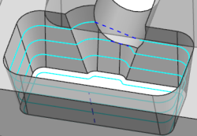

Cross the wall gap with direct transfer moves
You will edit the Contour Profile drive method to use a transfer move.
-
In the Path Settings group, click Non Cutting Moves
 .
.
The Non Cutting Moves dialog box is displayed.
-
Click the Transfer/Rapid tab.
-
In the Within Regions group, under Traverse, notice the following setting.
-
Traverse Type = Direct
-
-
Click OK.
The Contour Profile dialog box is displayed.
-
In the Drive Method group, in the Method row, click Edit
 .
.
The Contour Profile Drive Method dialog box is displayed.
-
Set the following:
Across Wall Gaps group
-
Motion Type = Cut
Transfer within Region subgroup
-
Minimum Distance = 0 in
-
-
Generate the tool path.
Notice that the tool crosses the wall gap with direct transfer moves at both locations.
